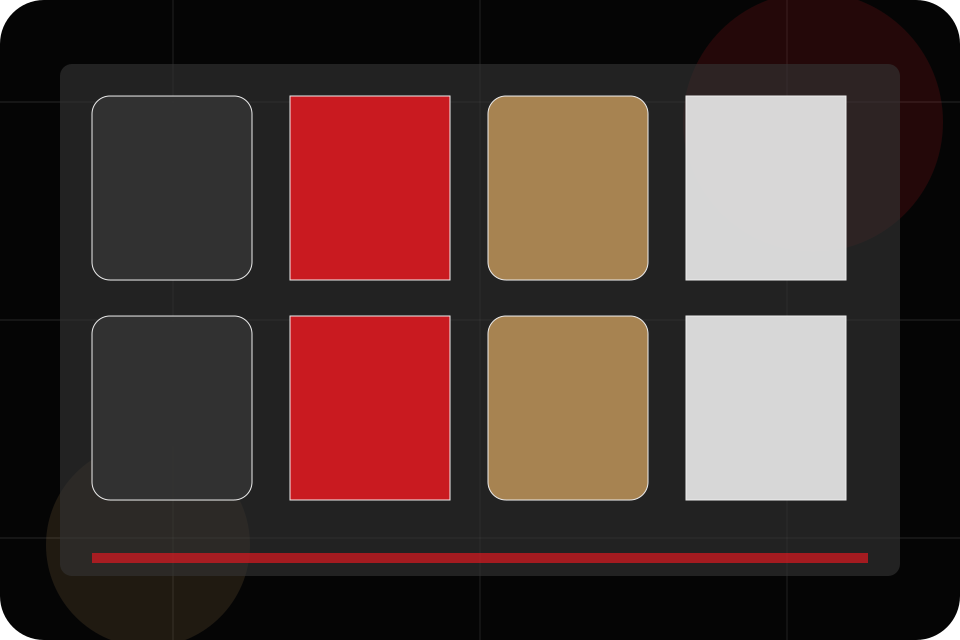
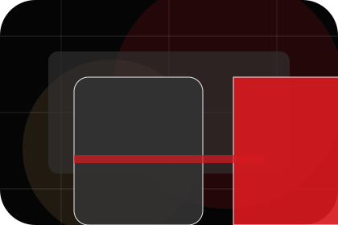
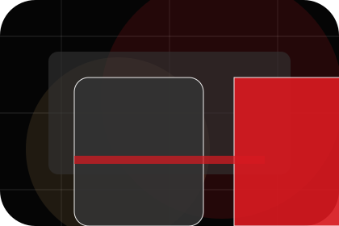
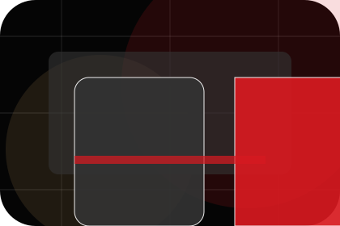
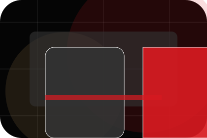
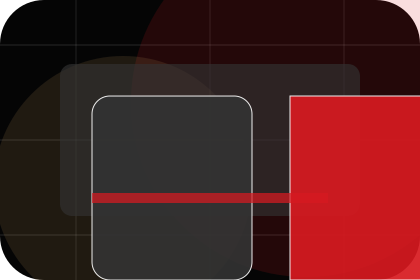
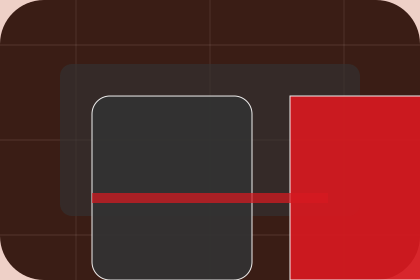

Teachers / 01
Teachers by Bright
Teachers shaped for education, training & learning services decisions.
Teachers opens as a clear education decision hub: what Bright offers, who it helps, why it matters, and which route to take first.
The first screen combines positioning, proof, primary action, and fast internal navigation, so people can act immediately or compare the rest of the teachers route with context.
Clear intakeHuman follow-upPractical reassurance
Black cinematic course hero
Filter the options
Select the closest route and Bright keeps the next step, proof, and follow-up expectation aligned with confidence and progress.

Teachers / 02
Who handles team
Team introduces the people, roles, or specialist credibility behind Bright so the decision feels less anonymous.
The copy ties names, roles, credentials, or availability back to the decision on the page instead of treating profiles as decorative biographies.
Explore Teachers
Role
The person, team, or specialist function connected to team is easy to understand.

Credibility
Credentials, responsibilities, or availability are tied to the visitor's decision, not listed for decoration.

Handoff
The section explains how to move from profile interest to a practical conversation or booking path.
Teachers / 03
Who handles qualifications
Qualifications introduces the people, roles, or specialist credibility behind Bright so the decision feels less anonymous.
The copy ties names, roles, credentials, or availability back to the decision on the page instead of treating profiles as decorative biographies.
Explore TeachersBright structures qualifications around role, credibility, and a clear next route so visitors can compare the block quickly before they book a trial.
Book TrialTeachers / 04
Who handles experience
Experience introduces the people, roles, or specialist credibility behind Bright so the decision feels less anonymous.
The copy ties names, roles, credentials, or availability back to the decision on the page instead of treating profiles as decorative biographies.
Explore TeachersRole
The person, team, or specialist function connected to experience is easy to understand.

Credibility
Credentials, responsibilities, or availability are tied to the visitor's decision, not listed for decoration.
Handoff
The section explains how to move from profile interest to a practical conversation or booking path.
Teachers / 05
Who handles specialisms
Specialisms introduces the people, roles, or specialist credibility behind Bright so the decision feels less anonymous.
The copy ties names, roles, credentials, or availability back to the decision on the page instead of treating profiles as decorative biographies.
Explore TeachersRole
The person, team, or specialist function connected to specialisms is easy to understand.
Teachers / 06
Who handles profiles
Profiles introduces the people, roles, or specialist credibility behind Bright so the decision feels less anonymous.
The copy ties names, roles, credentials, or availability back to the decision on the page instead of treating profiles as decorative biographies.
Explore TeachersRole
The person, team, or specialist function connected to profiles is easy to understand.
Credibility
Credentials, responsibilities, or availability are tied to the visitor's decision, not listed for decoration.

Handoff
The section explains how to move from profile interest to a practical conversation or booking path.
Teachers / 07
Who handles style
Style introduces the people, roles, or specialist credibility behind Bright so the decision feels less anonymous.
The copy ties names, roles, credentials, or availability back to the decision on the page instead of treating profiles as decorative biographies.
Explore Teachers- 01
Role
The person, team, or specialist function connected to style is easy to understand.
- 02
Credibility
Credentials, responsibilities, or availability are tied to the visitor's decision, not listed for decoration.
- 03
Handoff
The section explains how to move from profile interest to a practical conversation or booking path.
Teachers / 08
Who handles availability
Availability introduces the people, roles, or specialist credibility behind Bright so the decision feels less anonymous.
The copy ties names, roles, credentials, or availability back to the decision on the page instead of treating profiles as decorative biographies.
Explore TeachersRole
The person, team, or specialist function connected to availability is easy to understand.
Credibility
Credentials, responsibilities, or availability are tied to the visitor's decision, not listed for decoration.
Handoff
The section explains how to move from profile interest to a practical conversation or booking path.
Teachers / 09
Trust, not claims
Trust gives the proof layer for teachers: standards, evidence, and reassurance that make the next decision feel grounded.
Instead of relying on vague claims, Bright presents visible standards, process cues, and proof artifacts that help education visitors judge fit.
Explore TeachersEvidence
Visible proof that helps visitors believe the claims behind trust.
Teachers / 10
Book Trial
Bright closes the teachers route with a clear action, a quick reminder of the value, and a low-friction way to book a trial.
Visitors who are ready can use the primary action. Visitors who are still comparing can scan the section links, proof, and support routes before they book a trial.
Book TrialThe final block keeps the choice simple: act now, compare one more proof route, or send enough detail for a focused response.
Book Trialconfidence and progress
Book Trial
A course-led education site with cinematic hero, lesson shelves, premium teacher proof, and trial routes. Teachers ends with a direct path to book a trial, plus enough context for visitors who still need to compare.

Book TrialImportant notes before you act
Information is provided for planning and should be reviewed for the final client, location, and operating rules.